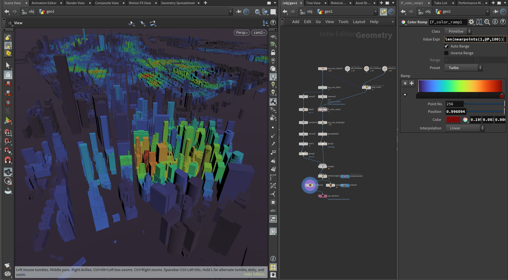
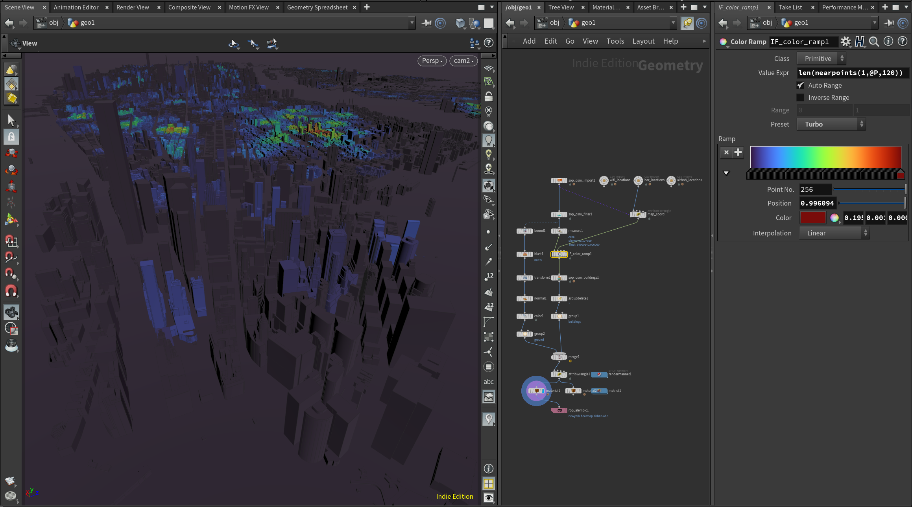
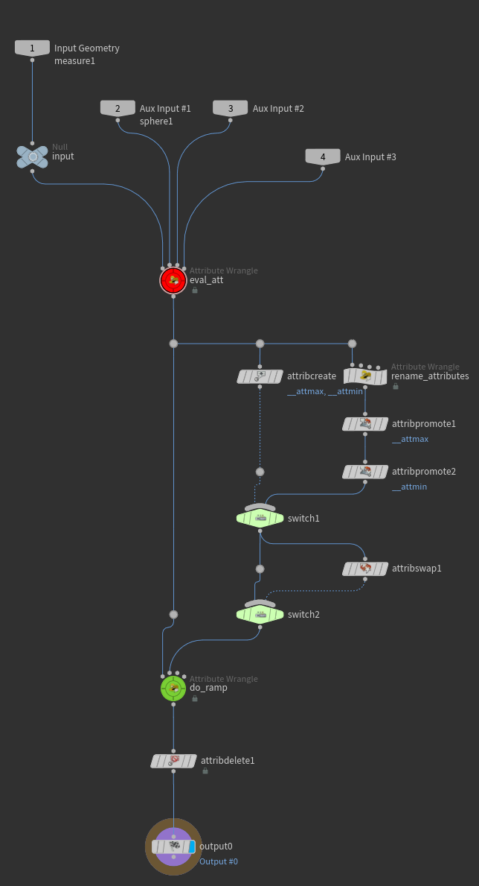
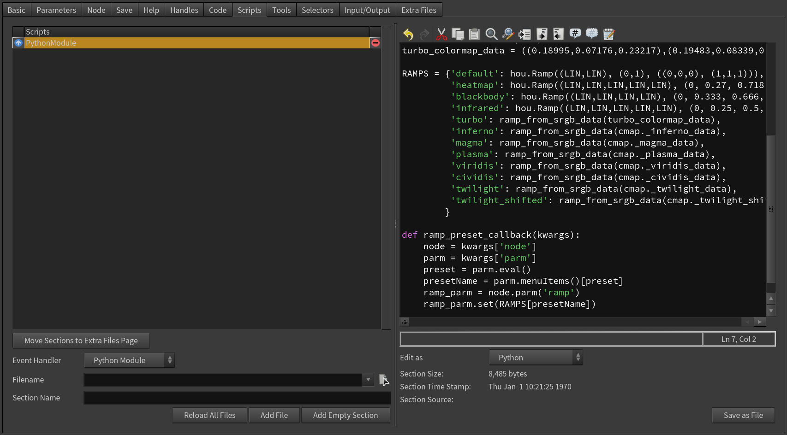
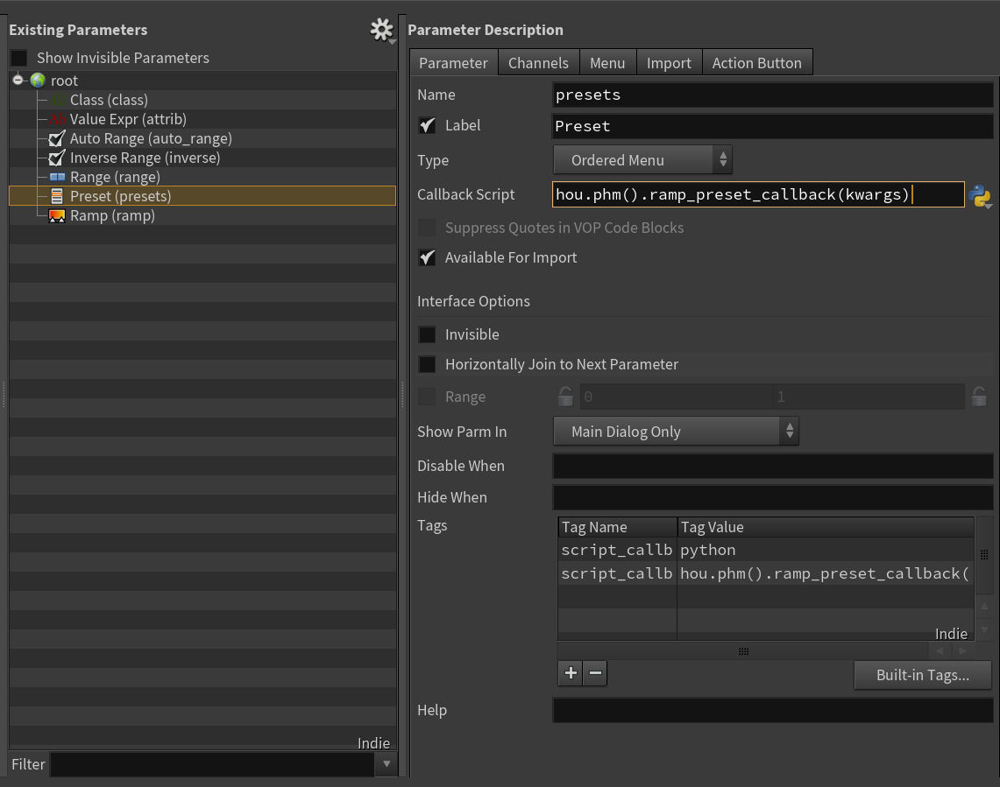
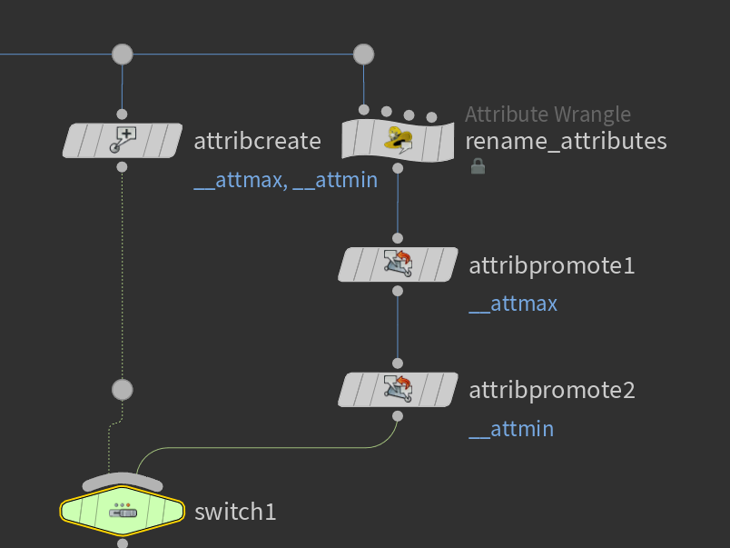
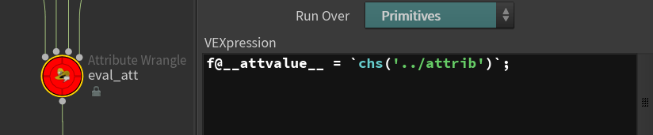

The Missing Color Ramp Operator For Houdini
起因
在 Houdini 里面随手拉一个颜色渐变出来实在是太简单了，以至于从没把这个当作一件要在意的事情。
直到看到这个 —— Turbo, An Improved Rainbow Colormap for Visualization
发现，选好渐变色还是挺有学问的
所以很想在 Houdini 里面也弄一个好用点的颜色可视化功能，功能上大概想要——
- 有几个好看的预设
- 可以自动确定值域
- 可以直接写表达式
嗯……于是就折腾出了一个
能干啥
比如看看法线和某个向量的夹角

比如看看高度

比如看看面积

比如看看某个看似 float 其实是 string 的属性

比如看看哪块地方 Airbnb 的选择比较多

或者看看哪块地方酒吧比较密集

……
实际用下来感受不错，早点折腾出这个东西就好了
HOW
Like This

如何做预设
首先，我注意到 MOPs 的 fallout preview 功能可以选择 preset，那太好了，学(抄)啊！
- 新建 hda
- 在 Scripts 中添加 PythonModule
- Python Module 中添加 preset callback: 
- 新建 presets 列表参数，设置 callback:
 - That's it
- 需要注意的是，无论前面提到的 turbo 还是从 matplotlib 抄来的有名有姓的渐变色，它们都是 sRGB 空间的，得转换一下再用
- 还有个小窍门是可以用 toolutils.createModuleFromSection 引用 hda 内部嵌入的 python 文件作为 module:

如何自动值域
easy:

如何执行表达式
also easy:

什么？这样写怕代码注入？能注入代码那不挺好嘛，反正搞挂 Houdini 又不差这一种办法...
需要注意的是 Evaluation Node Path 要设置成 ..，否则若是在上一层添加了 sparse input 或是通过相对路径引用了什么其他的 geometry, 表达式到这儿上下文就不对了